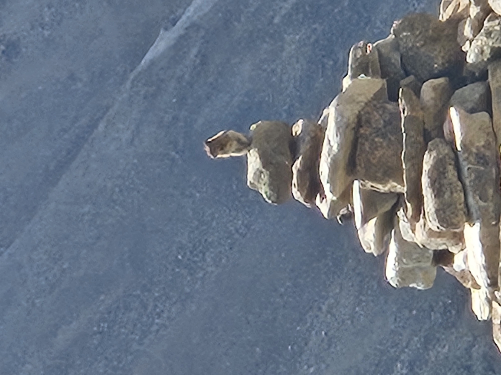
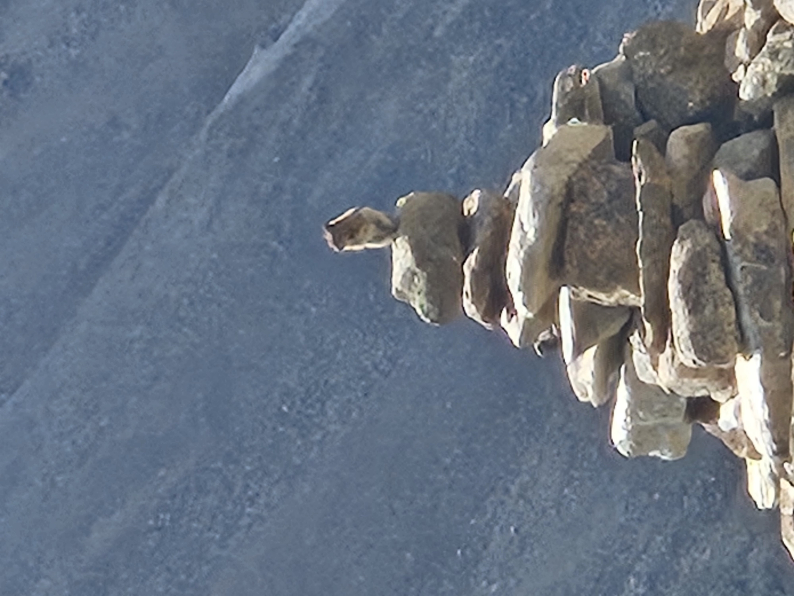
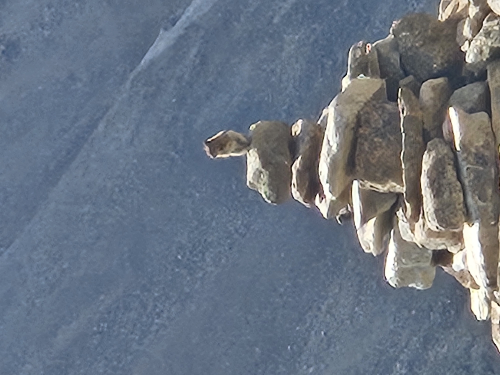

While in BSA I went on many camping trips. These experiences not only helped me learn useful skills such as knots, cooking, and first aid, but also strengthened my love for nature. On these trips I have seen naturally beauties hard to describe, unless you were present. This love for nature has made me want to pursue a career that would help preserve nature.
Images of Backpacking trips I went on:
